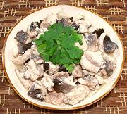

|
Fish AdoboPhilippine - Adobong Isda | ||||
| Serves: Effort: Sched: DoAhead: |
2 main ** 25 min Prep |
A mildly tart fish dish from the Philippines, the world capital for cooking with vinegar. As are many Philippine dishes, it's simple and easy to make. | |||
|
1-1/4 2 ------ 3 2 1 1/4 ------ 1 |
# cl --- T T t t --- T |
Fish (1) Garlic --Broth Vinegar (2) Water Salt Pepper, black -------- Oil |
This recipe, with rice, will serve two, or four Asian style with several other dishes. Prep - (10 min)
|